《追色手记08》学习资料
岩仓诗织 / Iwakura Shiori：故事感青蓝色调与 Lightroom 仿色实操
视频标题 | 【追色手记08】充满故事感的青蓝色调！岩仓诗织（lwakura Shiori）调色教程来啦 |
作者 | 摄影师聿铭 |
时长 | 约 8 分 35 秒 |
来源 | https://www.bilibili.com/video/BV1UN411N7pB/ |
整理日期 | 2026-05-22 |
说明：本文根据视频音频转写、画面截取与内容校对整理，保留学习所需的方法、步骤和关键截图，不包含逐字稿。
岩仓诗织作品参考截图
以下为视频中展示的岩仓诗织作品和分析画面截图，用来观察青蓝色调、环境人像、小人物叙事和季节感。它们是视频截图，可能保留界面、字幕或讲解标注。
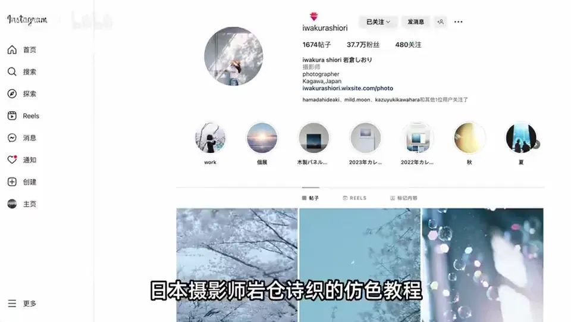 账号入口：作品整体气质 | 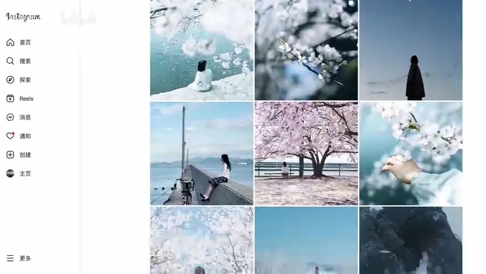 樱花与蓝调：季节感 |
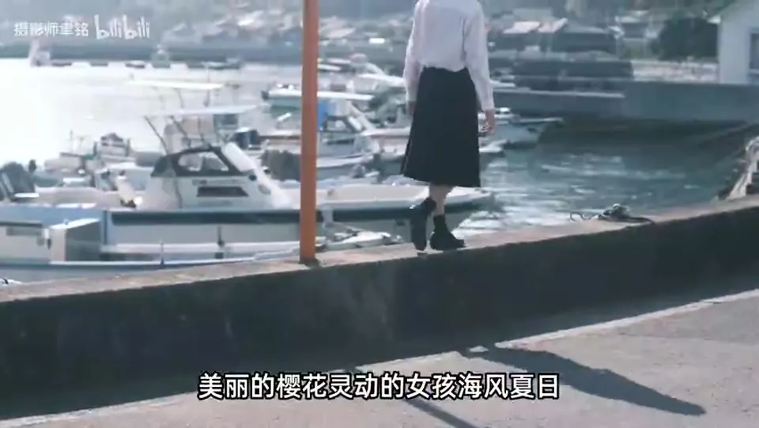 海边少女：故事感 |
室内日常：安静瞬间 |
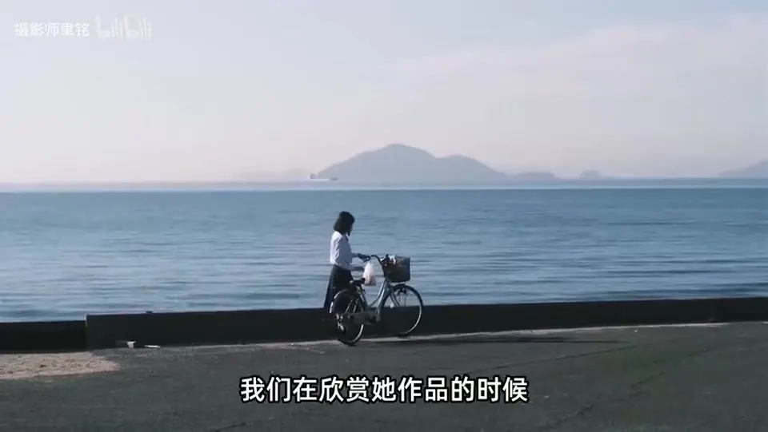 海边与单车：空间叙事 | 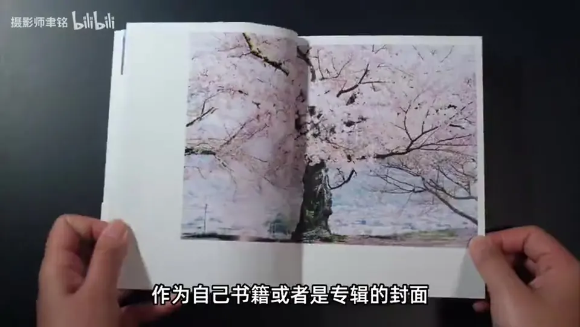 写真封面：青蓝识别度 |
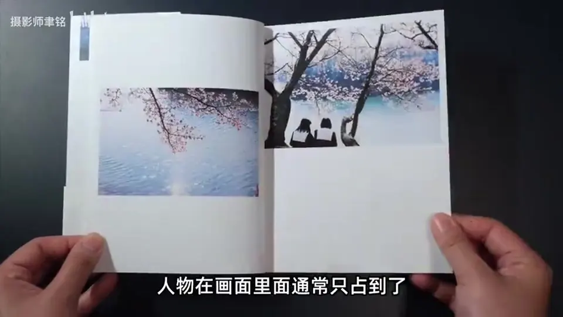 环境人像：人物较小 | 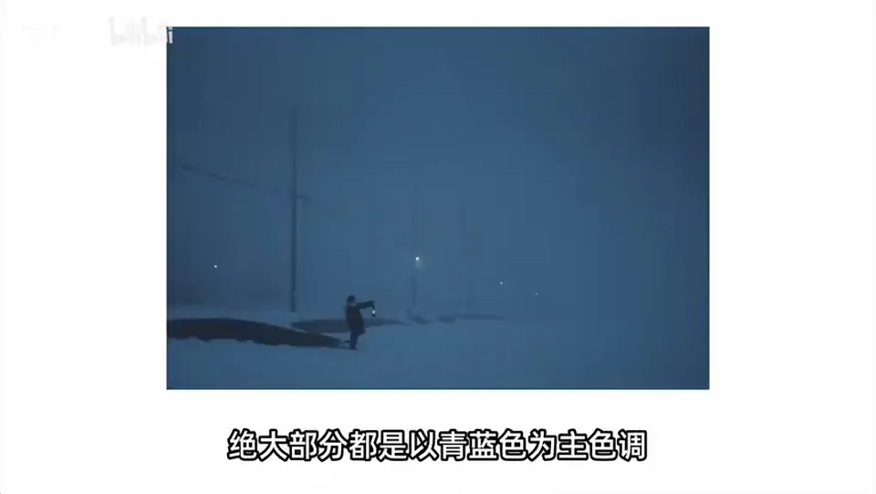 青蓝色调：氛围核心 |
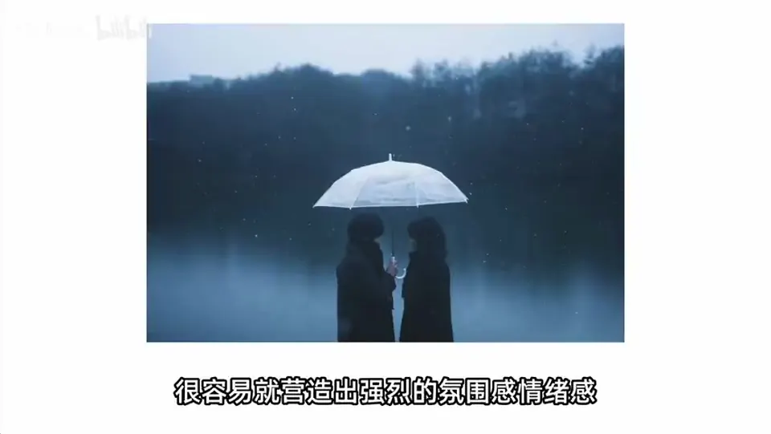 伞与蓝色环境：情绪 | 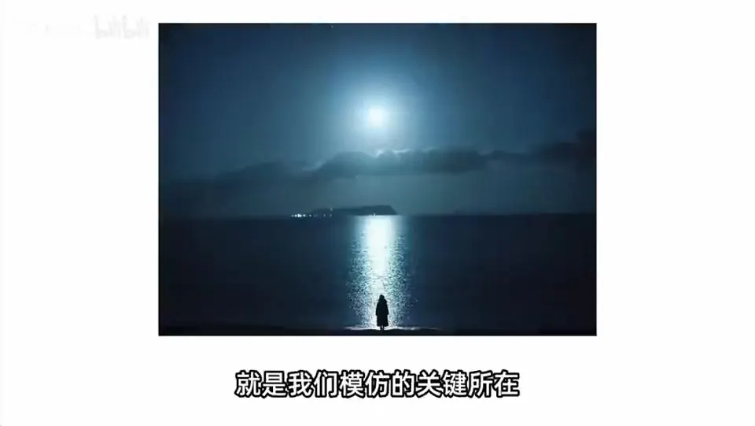 夜色/月亮：冷色叙事 |
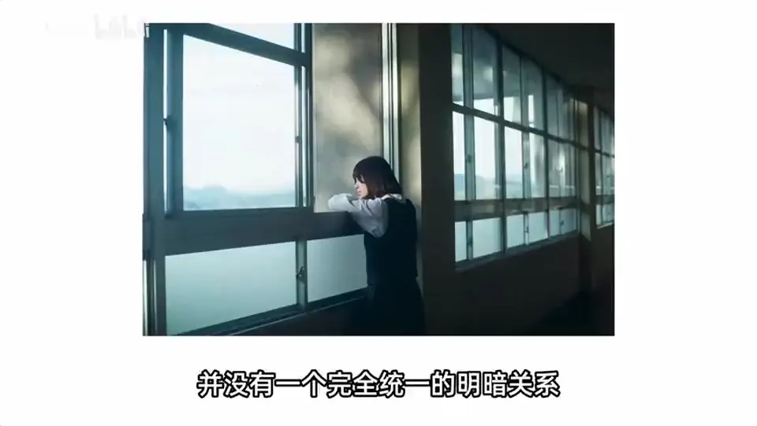 窗边蓝调：安静感 | 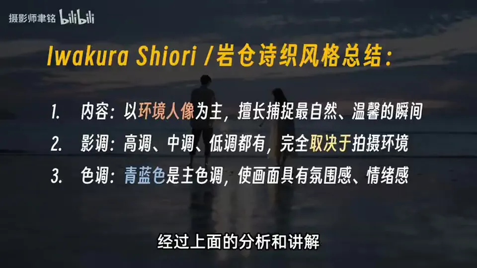 风格总结：内容与色调 |
一页速览
风格核心 | 岩仓诗织的照片重点不在模特是否完整露脸，而在环境、季节、人物动作和青蓝色调共同形成的故事感。 |
内容特点 | 樱花、少女、海边、夏日、窗边与日常片段常被放进安静、治愈的画面里；人物有时只占很小面积，却让场景有生命。 |
构图策略 | 大量环境人像和小人物叙事，保留天空、海面、街道、房间等空间感，让观众能想象画面前后的故事。 |
色调重点 | 青蓝色是最稳定的识别点。冷色不只是“变蓝”，而是用来制造氛围、情绪和叙事距离。 |
实操顺序 | 裁剪极简画面 -> 色温大幅左移 -> 降曝光和高光 -> 提阴影压黑色 -> 校准/HSL 定青蓝 -> 暗角 -> 蒙版模拟红色斜光。 |
学习目标
能从内容、构图、色调、影调四个层面拆解岩仓诗织式故事感。
理解青蓝冷调为什么能强化安静、夏日、回忆和叙事氛围。
能判断一张素材是否适合仿这种风格：画面要有环境空间、人物关系和冷色余地。
掌握用白平衡先完成大方向，再用校准、HSL 和局部蒙版做精修的顺序。
能用红色斜光或暖色局部给冷色画面增加视觉平衡，而不是让整张图单调发蓝。
核心方法：四层拆解
维度 | 观察重点 | 本片结论 |
内容 | 人物、季节、场景和动作是否能引发联想。 | 日常与自然场景居多，画面安静、治愈，但能让人感觉故事正在发生。 |
构图 | 人物在画面中的比例与环境留白。 | 人物常很小，背景空间很大；人不是唯一主体，而是点亮环境的叙事线索。 |
色调 | 主色和情绪关系。 | 青蓝是主基调，用冷色建立空气感、距离感和故事感。 |
影调 | 亮度关系是否统一。 | 没有固定高调或低调公式，按场景决定，后期不强行把所有图调成同一种亮度。 |
Lightroom 实操流程
选择参考和素材：参考图选择青蓝色调明显、人物较小、环境空间足的作品；练习素材选择海边傍晚小人物画面，更容易接近目标风格。
裁剪极简构图：先通过裁剪去掉干扰元素，保留天空、海面和人物，让画面进入更干净的环境人像结构。
白平衡定大方向：色温向左大幅移动，让画面先进入青蓝冷调。视频强调这一步完成了大约八成的风格方向。
基础影调收敛：降低曝光和高光，让傍晚氛围更明显；阴影可略提，保留人物和环境细节；黑色色阶下压，增强画质和对比。
校准修蓝色质量：红原色色相向右能让蓝色更干净；红色饱和可略升。蓝原色色相向左，让蓝色更偏青蓝，同时降低蓝色饱和避免刺眼。
HSL 精修蓝色：继续微降蓝色饱和度，让画面冷而不艳，保留岩仓诗织作品中克制的冷色空气感。
暗角增强氛围：加入一点暗角，把视线压回画面中心，也让海边傍晚的安静感更集中。
红色斜光平衡画面：参考图天空有一束偏红的斜向光线，可用蒙版/渐变模拟；色相偏红、饱和度降低，让冷色画面多一点暖色呼吸。
工具速查表
工具 | 用途 | 本片操作 | 注意点 |
裁剪 | 先建立环境人像构图 | 去掉多余岸边和杂物，保留大面积天空海面。 | 构图不对时，后期参数再像也没有故事感。 |
白平衡 | 快速进入青蓝主调 | 色温大幅左移。 | 先看整体情绪，不要一开始纠结局部颜色。 |
基础面板 | 控制傍晚氛围与层次 | 降曝光、高光；提阴影；压黑色色阶。 | 降太多会闷，压黑色时要保留人物可读性。 |
校准 | 改变蓝色纯度和青蓝方向 | 红色相右移，蓝色相左移，蓝饱和降低。 | 蓝色要干净，但不能荧光或过饱和。 |
HSL | 细修单一颜色 | 继续降低蓝色饱和度。 | HSL 是收尾，不要替代白平衡的大方向。 |
效果暗角 | 聚焦视线、压出氛围 | 加入轻微暗角。 | 暗角要自然，不要像边框。 |
蒙版渐变 | 制造局部暖色斜光 | 线性/径向渐变叠一束红色低饱和光。 | 暖色只是平衡冷色，不能抢走青蓝主调。 |
关键截图与讲解
图 01 | 00:45 | 岩仓诗织风格引入。
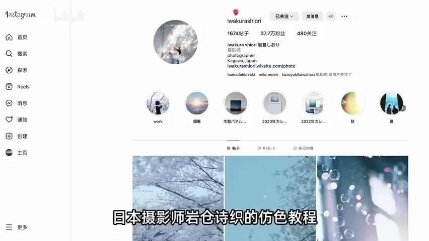
学习要点：作者从“不靠完整露脸”的人像开始，强调环境和情绪比颜值本身更重要。
图 02 | 01:03 | 樱花、少女、海风、夏日。
学习要点：这些内容元素共同构成安静、治愈、带季节感的叙事世界。
图 03 | 01:39 | 环境人像与小人物。
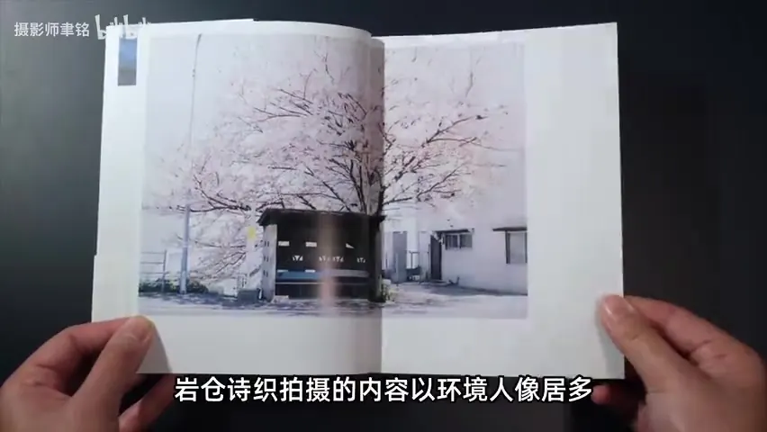
学习要点：人占比很小也能让画面有生命，这正是故事感来源之一。
图 04 | 01:58 | 青蓝色调是关键。
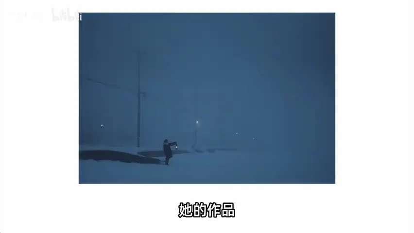
学习要点：本片最重要的仿色方向是青蓝冷调，而不是单纯调亮或调灰。
图 05 | 02:20 | 影调随场景变化。
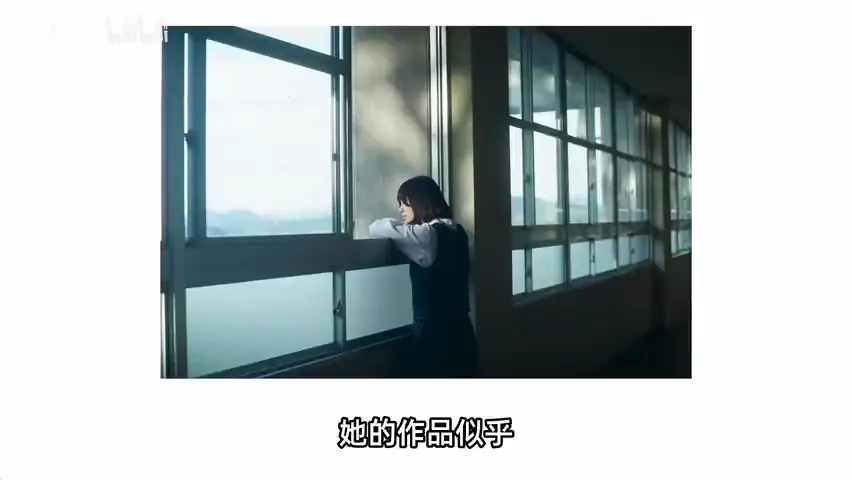
学习要点：岩仓诗织作品没有固定亮度公式，后期不应把所有素材强行统一成一种明暗。
图 06 | 03:21 | 进入 Lightroom：选参考和素材。
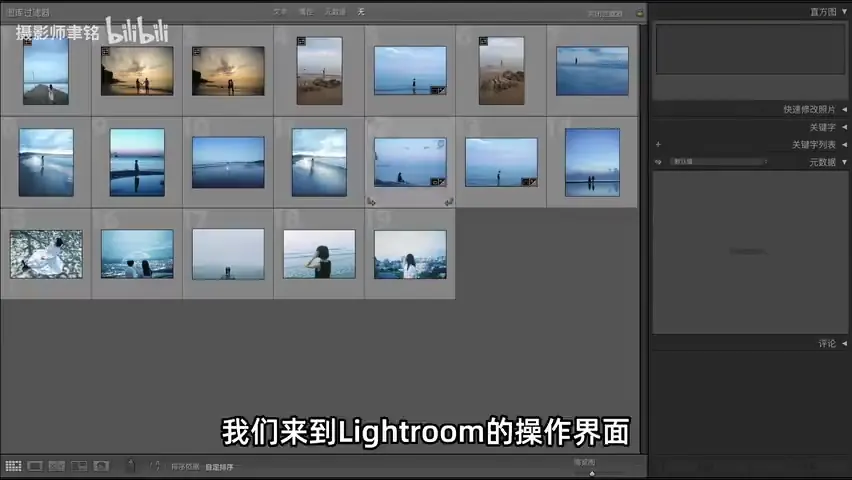
学习要点：参考图和练习素材都具备海边、小人物、蓝色空间等共同点。
图 07 | 03:48 | 裁剪成极简环境画面。
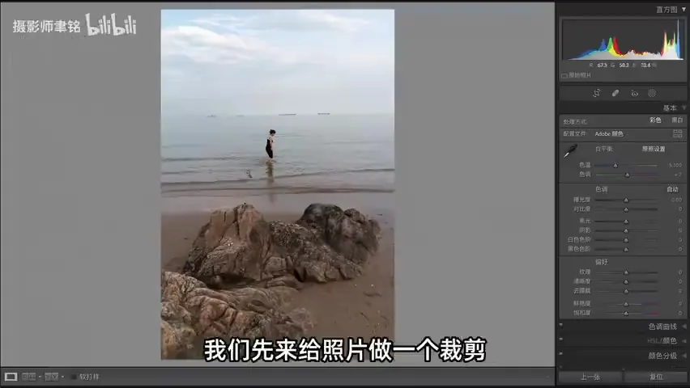
学习要点：先去掉干扰，让天空、海面和人物关系更清晰。
图 08 | 04:28 | 色温向蓝：完成大方向。
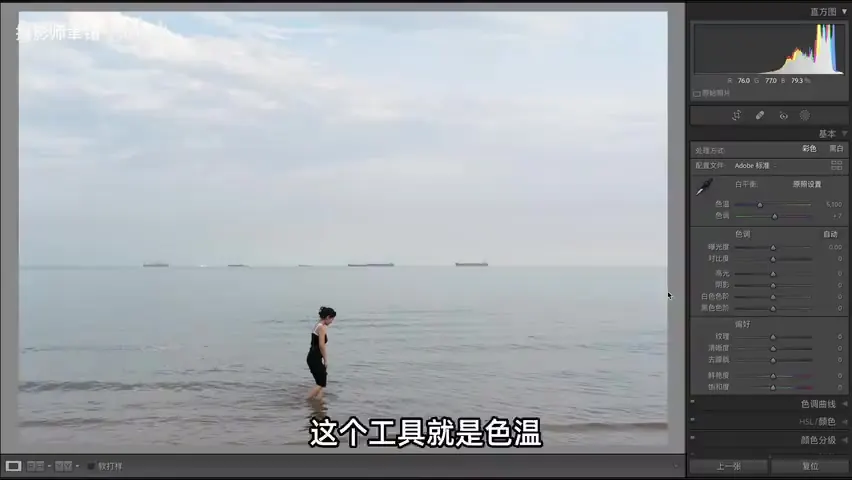
学习要点：白平衡是这次仿色的核心开关，先把画面推入青蓝氛围。
图 09 | 04:48 | 色温调整后的对比。
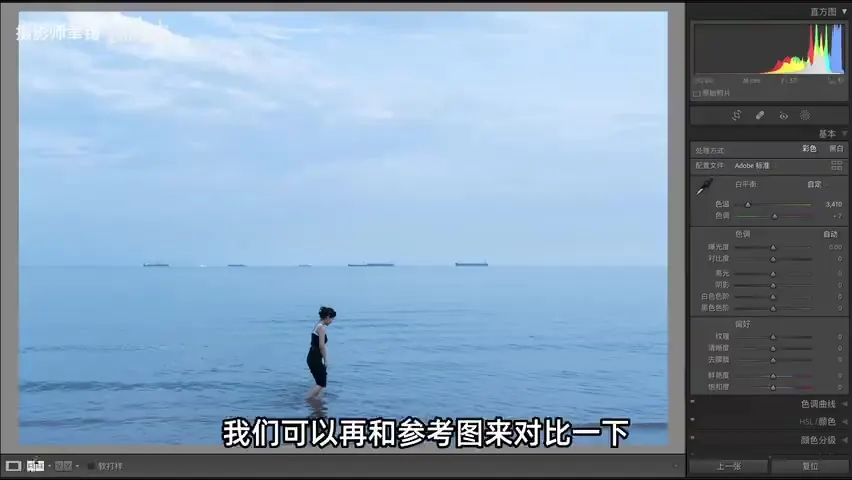
学习要点：画面已经明显接近参考图的冷色空气感。
图 10 | 05:02 | 降低曝光和高光。
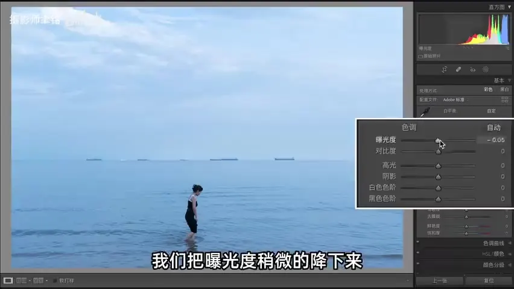
学习要点：压出接近傍晚的情绪，同时避免天空过亮。
图 11 | 05:18 | 压黑色色阶增强质量。
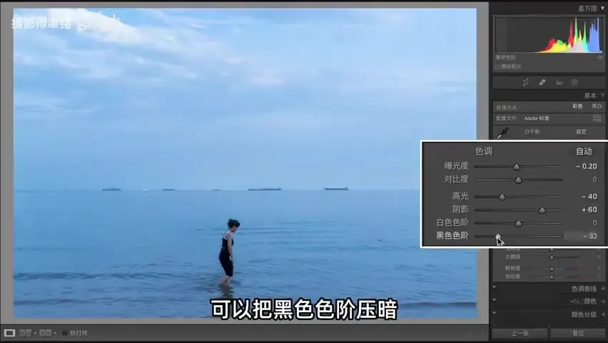
学习要点：黑色色阶让画面更实，避免只靠降曝光导致整体发灰。
图 12 | 05:31 | 校准：红原色色相右移。
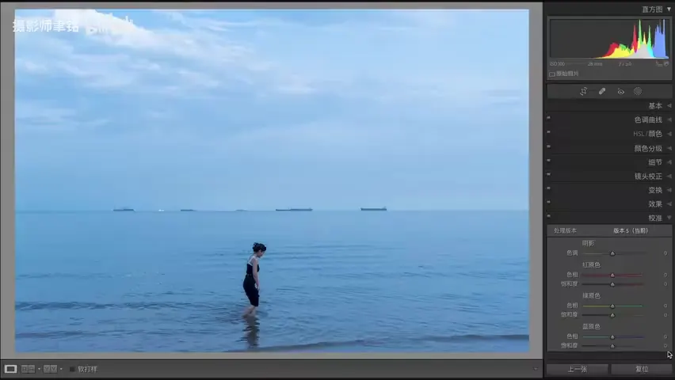
学习要点：这一步会让蓝色更干净，也会影响整体色彩结构。
图 13 | 05:47 | 校准：蓝原色向青蓝靠。
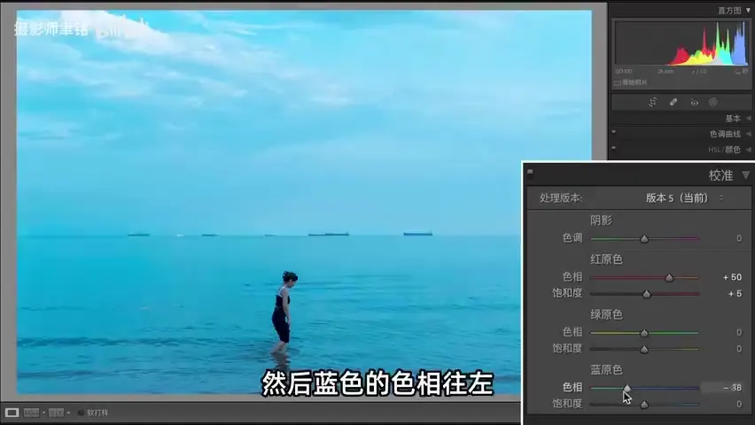
学习要点：蓝色色相向左、饱和度下降，是青蓝而不艳的关键。
图 14 | 06:04 | HSL：继续压蓝饱和。
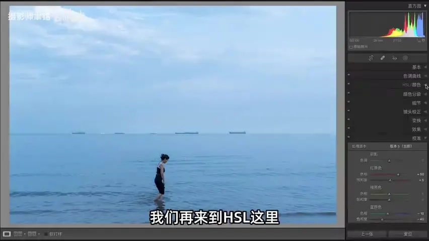
学习要点：让冷色更克制，减少视频画面中容易出现的过蓝感。
图 15 | 06:17 | 效果：暗角。
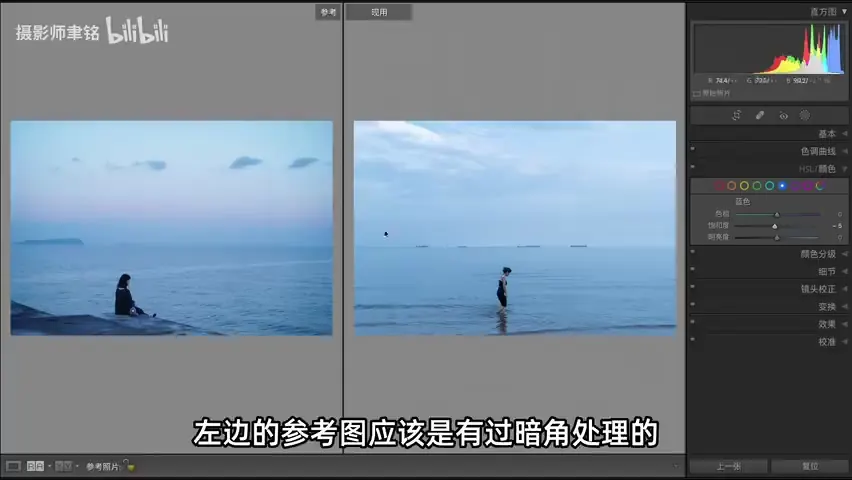
学习要点：暗角把视线留在画面中部，也增加安静氛围。
图 16 | 06:31 | 参考图中的红色斜光。
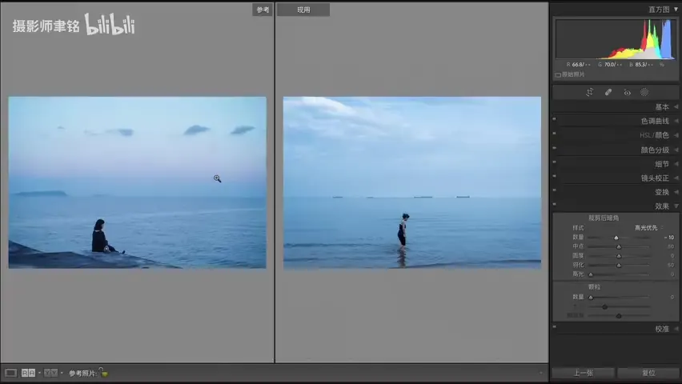
学习要点：冷画面里的一点暖色能产生视觉平衡和晚霞感。
图 17 | 07:05 | 蒙版：制作斜向光线。
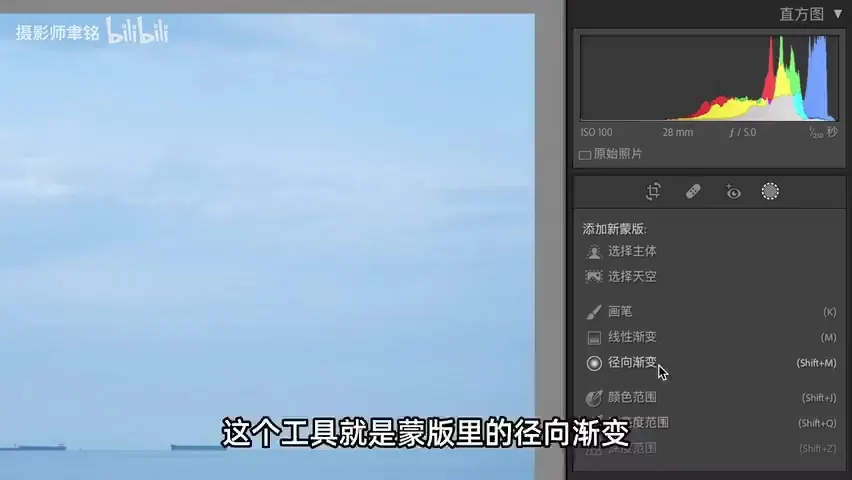
学习要点：用渐变工具在天空区域叠加一条自然的暖色光。
图 18 | 07:22 | 蒙版色相转红。
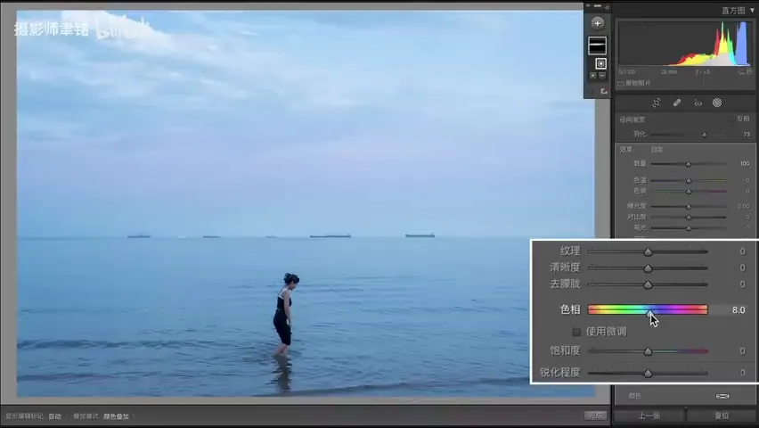
学习要点：低饱和红色比高饱和红更像自然天光。
图 19 | 07:35 | 最终画面与参考方向对照。
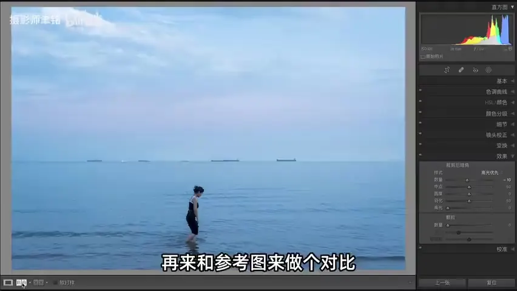
学习要点：色调、构图和情绪已经接近目标，但仍保留素材本身特点。
图 20 | 07:48 | 前后对比。
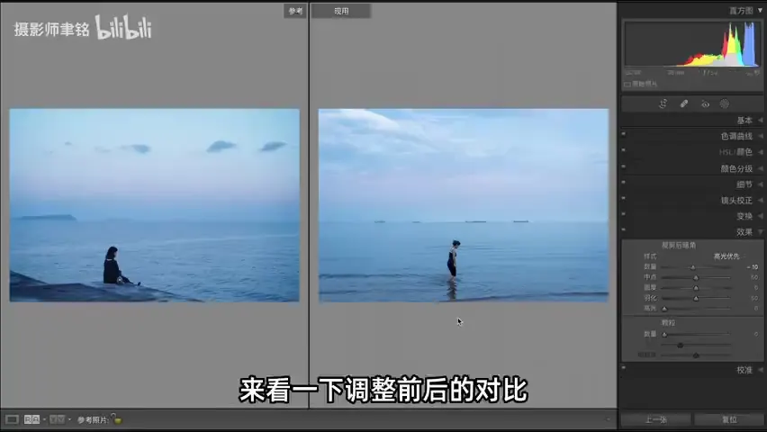
学习要点：从普通海边傍晚素材转为青蓝、安静、有故事感的成片。
练习任务
选一张人物占比小、环境空间大的海边、街道或窗边照片，不要选纯大头肖像。
先写下画面故事：人物在做什么、环境是什么季节、冷色是否能帮助表达情绪。
裁剪出更极简的环境人像构图，保留能讲故事的空间。
只用白平衡先做一版青蓝方向，再对比参考图的氛围是否接近。
用基础面板压出傍晚或静谧感，再用校准和 HSL 控制蓝色纯度与饱和度。
尝试加入一束低饱和暖色光，检查它是否只是平衡画面，而不是破坏青蓝主调。
复盘清单
检查项 | 通过标准 |
内容 | 画面有日常、季节、环境和人物动作，不只是单纯摆拍。 |
构图 | 人物不必大，但必须能成为故事线索；背景留白有意义。 |
青蓝主调 | 整体有明确冷色氛围，但蓝色不过饱和、不荧光。 |
影调 | 亮度关系服务场景，不为了套风格强行调成固定高调或低调。 |
细节 | 人物和环境仍有可读信息，黑色不死，天空不过曝。 |
暖色平衡 | 红色斜光自然、低饱和，只增加呼吸感，不抢主体。 |
整体 | 成片让人感觉安静、治愈、有故事，而不只是“变蓝”。 |
时间轴速查
时间 | 模块 | 重点 |
00:20-01:24 | 风格引入 | 从岩仓诗织的人像作品讲起，强调故事感、治愈感和季节元素。 |
01:24-02:07 | 内容与构图 | 环境人像、小人物叙事，人物占比小但让画面有生命。 |
02:07-02:45 | 色调与影调 | 青蓝色调是核心；影调没有固定公式，随场景而变。 |
03:15-03:58 | 素材与裁剪 | 选择海边小人物素材，并裁剪成极简构图。 |
04:05-04:55 | 白平衡 | 色温向蓝大幅移动，先完成主要风格方向。 |
04:55-05:25 | 基础面板 | 降曝光、高光，提阴影，压黑色增强对比。 |
05:25-06:10 | 校准与 HSL | 红色相右移让蓝更干净，蓝色相左移偏青蓝，并降低蓝饱和。 |
06:10-06:35 | 效果 | 加入暗角，让氛围更集中。 |
06:35-07:35 | 蒙版 | 用渐变模拟参考图中的红色斜光，平衡冷色画面。 |
07:35-07:55 | 收尾对比 | 查看最终效果和前后变化。 |
全部图片
本页共保留 32 张来自 Word 的图片。上方正文中已按文档顺序展示，这里作为总览索引。